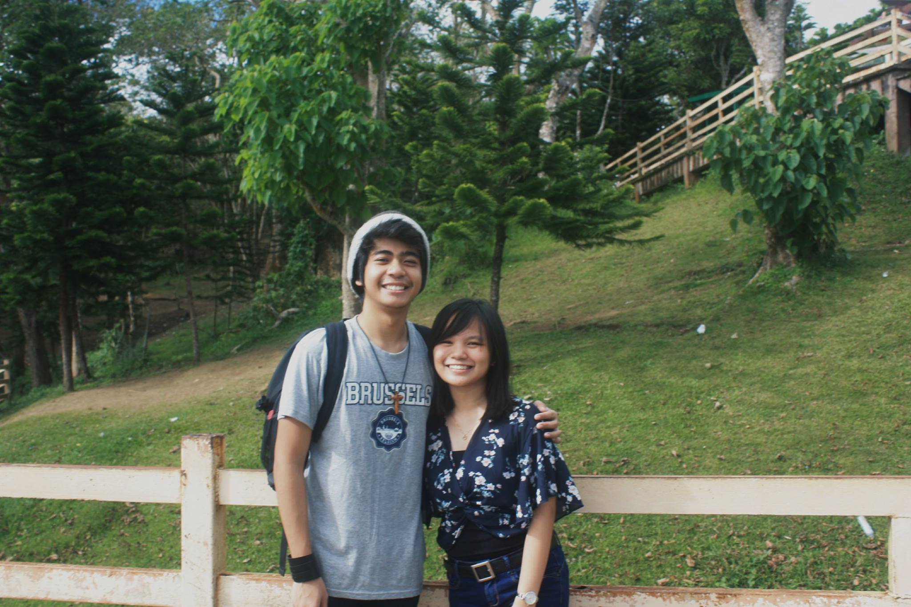

MANUEL JOSEPH U. URBANO

----- FAVORITE SUBJECT -----
. . . CMSC 11 . . .
Because of the simple reason that this is where I started learning what "programming" is.
This is also where I realized that I love programming.
----- FAVORITE FOOD -----
. . . BACON & PIZZA & LASAGNA . . .
REALLY LOVE IT. TASTES SO GOOD. SO FINE. SO HEAVENLY
----- ABOUT MYSELF -----
. . . REALLY FRIENDLY . . .
I can be your friend just come to me xddddddd
. . . LOVE MEMES . . .
Who doesn't?!?!?!???!??!
. . . DOTA 2 PLAYER . . .
Above average btw, or so what I believe.
----- EXPECTATIONS IN CMSC 100 -----
. . . FUN BUT HARD . . .
Comsci subjects in a nutshell.
Really fun to do but, so hard and time consuming.
----- EXPECTATIONS FOR TEACHER -----
. . . FUN AND . . .
Comsci subjects in a nutshell.
Really fun to do but, so hard and time consuming.